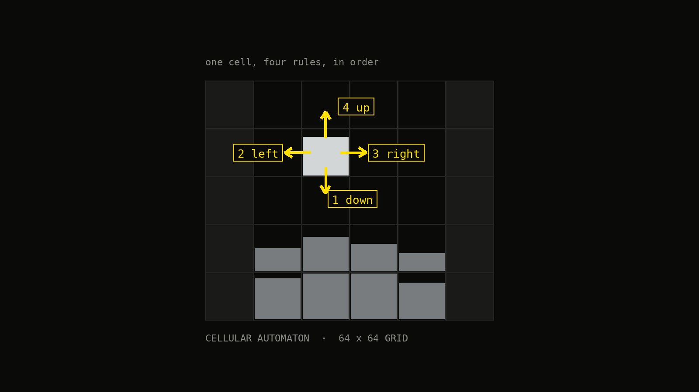
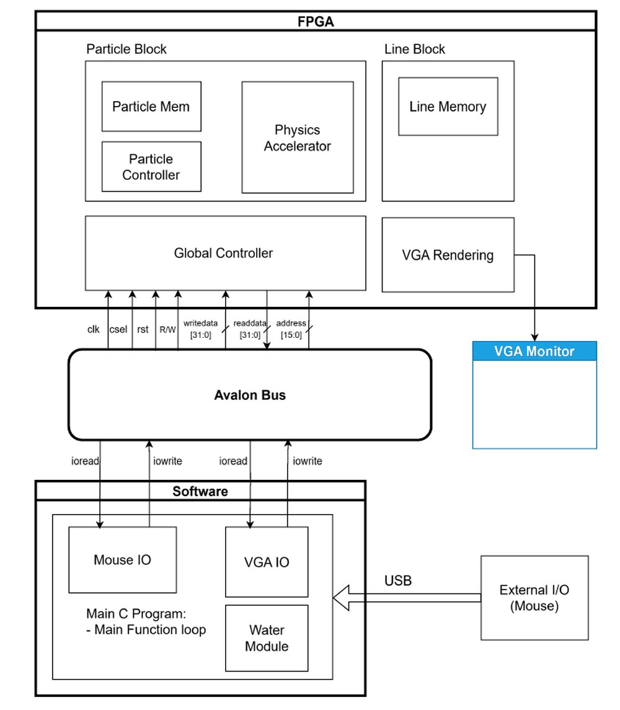

Water that falls, spreads and settles on a 64×64 grid, with the physics running as a custom circuit on an FPGA instead of as code on a CPU.

The water is not made of droplets. The world is a grid of 64×64 cells, and each cell just holds a number: how much water is in it. There are no particles to track, no velocities, no positions. Water moves because each cell hands some of its number to its neighbours.
That simplicity is what makes it a good fit for hardware. Each cell only ever looks at itself and its four neighbours, and the work per cell is always the same, so it can be built as a pipeline that chews through one cell per clock tick rather than as a loop on a processor.
On every tick, each cell that holds water applies four rules in a fixed order:
Push as much as possible into the cell below. A cell can be squeezed past full, which is what makes deep water press harder than shallow water.
Whatever is left spreads into the free cells on either side, so pools level themselves out instead of standing in columns.
If a cell is still over-full after all that, the excess is pushed upward. This is what lets water climb the far side of a U-shaped container.
A cell that stops changing gets flagged as settled and skipped, so still pools cost nothing and the screen can draw them differently from moving water.
If cells were updated one at a time, a cell would see its neighbour's new value rather than its old one, and water would slide further in whichever direction the sweep happened to run. So a tick is split in two: the first pass only works out how much water should move and writes it into a scratch grid; the second pass adds those amounts up and commits them.
Every cell then sees the same snapshot of the world. The reference version of this algorithm solves the same problem by giving every cell five separate scratch fields, which costs about five times the memory. Because the hardware handles one cell at a time, one shared scratch grid is enough.
The chip has two halves: an ARM processor and programmable logic, talking over a bus. The processor does none of the physics. It reads the USB mouse, converts the pointer into grid coordinates, loads the starting map, and tells the logic when to run a step. Everything else — the physics, the memory holding the grid, the wall shapes, and driving the VGA output — lives in hardware.

Each cell is packed into a single 32-bit word: what kind of cell it is, how much water it holds, and a few flags for the renderer. All the arithmetic is fixed-point, sized to the multipliers the chip already has. At 64×64 the whole world plus its scratch grid comes to roughly 5% of the on-chip memory, which leaves room to grow the grid later.